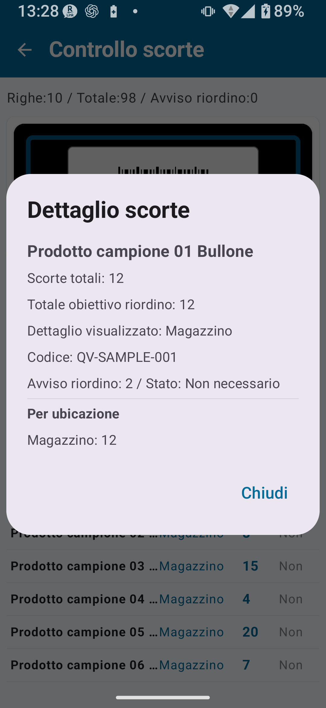

Panoramica della Gestione magazzino nel piano gratuito
La Gestione magazzino traccia carichi, scarichi e trasferimenti dei prodotti per mantenere una visione accurata dei livelli di scorta correnti. Il piano gratuito consente di esplorare la consultazione di base delle scorte e l'uso fondamentale dell'Anagrafica prodotti.
Schermate principali della Gestione magazzino: Consultazione scorte / Carico / Scarico / Trasferimento scorte / Storico magazzino / Importazione ed esportazione dati

Limiti del piano gratuito
| Elemento | Limite del piano gratuito | Come rimuoverlo |
|---|---|---|
| Record anagrafici | Fino a 30 | Gestione magazzino Standard o superiore |
| Record dello storico scorte | Fino a 30 | Gestione magazzino Standard o superiore |
| Record esportati | Fino a 30 | Gestione magazzino Standard o superiore |
| Registrazione dell'Anagrafica ubicazioni | Non disponibile o limitata | Gestione magazzino Standard o superiore |
| Modifica diretta del totale cumulativo registrato | Non disponibile | Piano Completo della Gestione magazzino |
| Regole dettagliate per codice/ubicazione | Non disponibili | Piano Completo della Gestione magazzino |
| Importazione/Esportazione CSV estesa | Limitata (record e funzionalità) | Piano Completo della Gestione magazzino |
Consultazione scorte
La schermata Consultazione scorte mostra inizialmente il totale delle scorte combinato per prodotto. Il controllo di riordino viene calcolato usando il totale delle scorte di tutte le ubicazioni per cui nell'Anagrafica ubicazioni è attiva l'opzione "Includi nel controllo di riordino".

Cosa puoi fare in Consultazione scorte
- Visualizzare il totale corrente combinato delle scorte per ciascun prodotto
- Filtrare per nome o codice prodotto tramite la ricerca
- Confrontare il punto di riordino con il totale delle ubicazioni incluse per identificare gli articoli da rifornire
- Toccare un prodotto per espandere il dettaglio per ubicazione. Nella vista del dettaglio per ubicazione, il controllo di riordino non viene mostrato o viene trattato come inattivo
Procedura di Consultazione scorte
- Dalla schermata principale, tocca Gestione magazzino.
- Apri Consultazione scorte.
- Trova il prodotto che vuoi controllare (cerca o scorri l'elenco).
- Tocca il prodotto per visualizzare il dettaglio scorte.
Dettaglio scorte
Toccando un prodotto nella schermata Consultazione scorte si apre la schermata Dettaglio scorte.

Cosa puoi vedere in Dettaglio scorte
- Codice e nome del prodotto
- Quantità totale in scorta
- Dettaglio delle scorte per ubicazione
- Punto di riordino e prezzo (se registrati nell'Anagrafica prodotti)
- Categoria
Relazione con i dati anagrafici
La Gestione magazzino lavora insieme all'Anagrafica prodotti, all'Anagrafica categorie e all'Anagrafica ubicazioni. Mantenere informazioni accurate nei dati anagrafici migliora la qualità dei record di magazzino.
| Anagrafica | Ruolo principale | Campi chiave |
|---|---|---|
| Anagrafica prodotti | Registra i prodotti che detengono scorte fisiche | Codice prodotto/codice a barre, nome prodotto, categoria, prezzo, punto di riordino |
| Anagrafica categorie | Gestisce i raggruppamenti usati per classificare i prodotti | Codice categoria, nome categoria, ordine di visualizzazione |
| Anagrafica ubicazioni | Gestisce le ubicazioni di stoccaggio | Codice ubicazione, nome ubicazione, ordine di visualizzazione, attivo/inattivo |
Disponibilità di carico, scarico e trasferimenti
Nel piano gratuito, i punti di accesso a carico, scarico e trasferimento scorte possono essere visibili, ma il salvataggio effettivo e il numero di record sono limitati.
Indicazioni per carico, scarico e trasferimenti nel piano gratuito
- I pulsanti delle funzioni possono essere visibili.
- Il tentativo di usarli può mostrare un avviso di limite.
- Segui le istruzioni mostrate sullo schermo.
- Durante il carico di un codice prodotto non registrato, può apparire una richiesta per creare una nuova voce nell'Anagrafica prodotti.
- Il campo scorte nella schermata di scarico mostra le scorte correnti come riferimento — non è un campo di input modificabile.
Limiti CSV
Il piano gratuito limita sia il numero di record che puoi importare o esportare, sia le funzionalità disponibili.
| Elemento | Piano gratuito | Sblocco Standard | Sblocco Completo |
|---|---|---|---|
| Record esportati | Fino a 30 | Fino a 300 | Illimitati |
| Record import CSV | Limitati | Estesi | Estesi |
| CSV di backup completo (tutti i dati) | Limitato; segui le indicazioni in-app | Esteso | ○ |
Cosa non è possibile fare nel piano gratuito
| Funzionalità | Piano necessario |
|---|---|
| Più di 30 record anagrafici | Gestione magazzino Standard o superiore |
| Più di 30 record storici | Gestione magazzino Standard o superiore |
| Esportare più di 30 record | Gestione magazzino Standard o superiore |
| Blocco della rotazione dello schermo | Gestione magazzino Standard o superiore |
| Registrazione dettagliata dell'Anagrafica ubicazioni | Gestione magazzino Standard o superiore |
| Modifica diretta del totale cumulativo registrato | Piano Completo della Gestione magazzino |
| Regole dettagliate per codice/ubicazione | Piano Completo della Gestione magazzino |
| Esportazione CSV estesa | Piano Completo della Gestione magazzino |
| Applicare i dati dell'inventario fisico alla Gestione magazzino | Piano Completo della Gestione magazzino |
Flusso di lavoro consigliato per utenti del piano gratuito
Usalo per controllare le scorte con una gamma prodotti ridotta
Se hai 30 prodotti o meno, il piano gratuito supporta la consultazione continua delle scorte. È utile per monitorare i livelli di scorta e confrontarli con i punti di riordino.
Esercitati con dati di esempio
Crea dati di esempio dalla schermata Impostazioni per avere prodotti e dati di scorta pronti per la pratica. Ti consigliamo di familiarizzare con le operazioni prima di registrare dati reali.
Esporta CSV regolarmente per creare uno storico
Esporta in CSV mentre sei ancora entro il limite di 30 record esportabili e accumula i record di magazzino su un PC o in un foglio di calcolo.
Pianifica l'upgrade quando ti avvicini al limite
Quando il numero di prodotti e di record storici si avvicina a 30, valuta l'upgrade allo Sblocco Gestione magazzino Standard.
- Hai più di 30 prodotti
- Vuoi conservare a lungo lo storico di carichi e scarichi
- Vuoi usare ubicazioni separate (magazzino e negozio)
📌 Punti salienti del capitolo
- La Gestione magazzino registra transazioni quotidiane (carico, scarico, trasferimenti). È separata dall'Inventario fisico.
- Il piano gratuito ha un limite di 30 record (anagrafica, storico, esportazione) — adatto all'uso su piccola scala.
- Consultazione scorte mostra i totali di scorta correnti per prodotto, il dettaglio per ubicazione e gli articoli da rifornire.
- La Gestione magazzino lavora insieme alle anagrafiche prodotti, categorie e ubicazioni.
- La possibilità di salvare carichi, scarichi e trasferimenti nel piano gratuito è regolata dalle indicazioni in-app.
- Pianifica l'upgrade a Standard o al Piano Completo prima di avvicinarti al limite di 30 record.
🔍 Note prima dell'utilizzo
- Carico, scarico e trasferimenti di scorte possono avere limiti nel piano gratuito. Segui gli avvisi di limite mostrati nell'app.
- La registrazione dell'Anagrafica ubicazioni e la gestione dettagliata delle ubicazioni potrebbero richiedere il piano a pagamento applicabile.
- L'esportazione CSV di backup nel piano gratuito può avere limiti di record e funzionalità. Usa la schermata di esportazione attuale nell'app come fonte di riferimento.
- Applicare i dati dell'Inventario fisico alla Gestione magazzino è una funzione del Piano Completo. Controlla la schermata di conferma nell'app ed esporta un backup prima di usarla.
- Controlla la schermata Dettaglio scorte nell'app per verificare quantità e ubicazione prima di procedere.